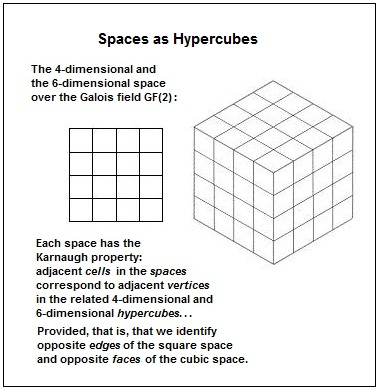

| Finite Geometry
Notes
|
Spaces as Hypercubes

For
further
details on the square space,
see Vertex
Adjacency in a Tesseract and in a 4×4 Array.
For
further
details on the cubic space,
see Geometry of the 4×4×4 Cube.
Page created November 3, 2012, by Steven H. Cullinane